Biography

I am currently a Research Fellow in the Centre for Vision, Speech and Signal Processing at the University of Surrey. I am interested in using computer vision and graphics techniques to facilitate volumetric video capture, reconstruction, editing and rendering from multiple camera systems for applications in film, broadcast and gaming. I also have a keen interest in Photography.
In 2016, I received a PhD from the University of Surrey supervised by Prof. Adrian Hilton and Prof. Graham Thomas (BBC R&D). My PhD introduced novel techniques to compactly represent multiple view video to allow efficient free-viewpoint rendering. During this time, I undertook an internship at the University of Southern California, Institute for Creative Technologies where I designed and built a photogrammetry scanning cage for rapid avatar creation, and a three month internship at BBC R&D integrating my PhD research into a WebGL-based renderer.
In 2011, I obtained an MEng in Electronic Engineering (Distinction) at the University of Surrey during which I spent a professional training year at Sony Broadcast and Professional Research Labs and a three month summer internship at the Intelligent Systems Research Laboratory University of Reading.
Research
Projects
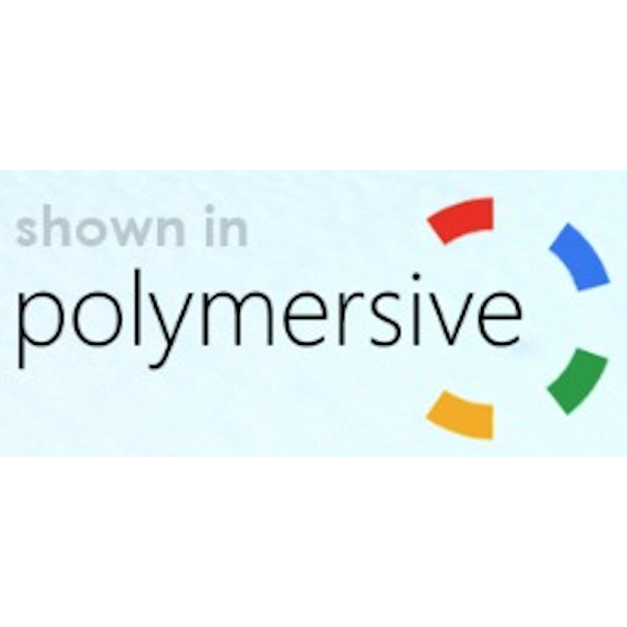 |
Polymersive: Immersive Video Production for Studio and Live Events Innovate UK (105168) with BBC Research and Development and IMSRVRay April 2019 - September 2020 |
|
ALIVE: Live Action Light Fields for Immersive VR Experiences Innovate UK (102686) with Figment Productions and Foundry September 2016 - December 2017 |
|
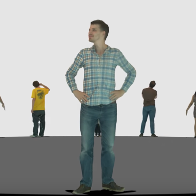 |
Raspberry Pi Photogrammetry Cage for Rapid Avatar Creation University of Southern California, Institute for Creative Technologies June 2015 - September 2015 |
|
RE@CT EU FP7 Project in collaboration with Artefacto, BBC R&D, Fraunhofer HHI, INRIA Grenoble and OMG Vicon December 2011 - November 2014 |
Publications
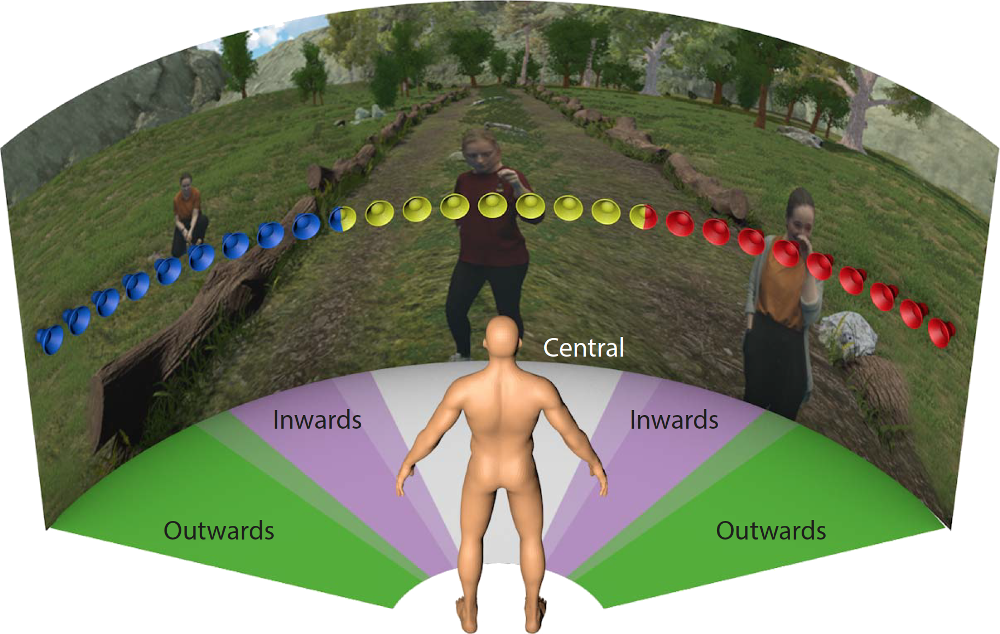 |
Audio-Visual Spatial Alignment Requirements of Central and Peripheral Object Events D. Berghi, H. Stenzel, M. Volino, A. Hilton, P.J.B. Jackson IEEE Conference on Virtual Reality and 3D User Interfaces (IEEEVR) 2020 |
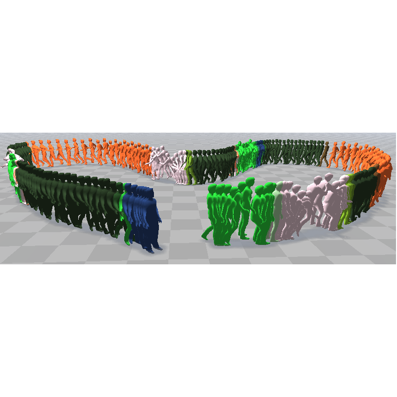 |
Dynamic Surface Animation using Generative Networks J. Regateiro, A. Hilton and M. Volino International Conference on 3D Vision (3DV) 2019 |
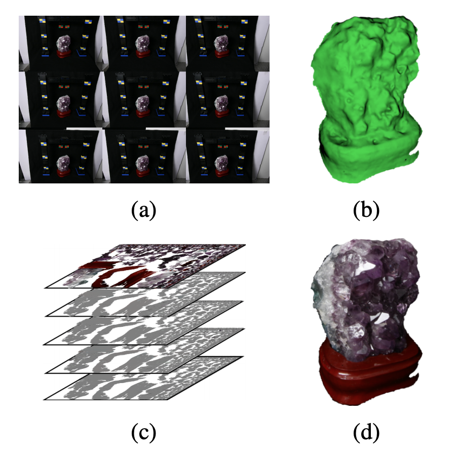 |
Light Field Compression using Eigen Textures M. Volino, A. Mustafa, J-Y. Guillemaut and A. Hilton International Conference on 3D Vision (3DV) 2019 |
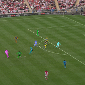 |
Multi-person 3D Pose Estimation and Tracking in Sports L. Bridgeman, M. Volino, J-Y. Guillemaut and A. Hilton 5th International Workshop on Computer Vision in Sports at CVPR 2019 |
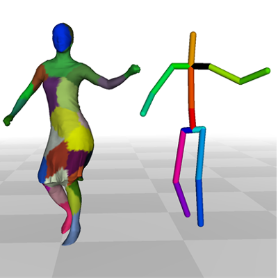 |
Hybrid Skeleton Driven Surface Registration for Temporally Consistent Volumetric Video J. Regateiro, M. Volino and A. Hilton International Conference on 3D Vision (3DV) 2018 |
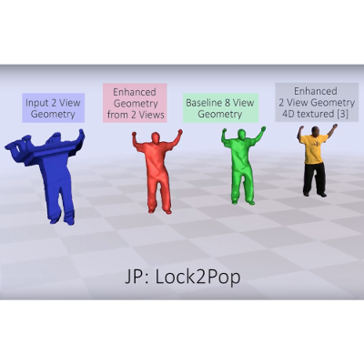 |
Volumetric Performance Capture from Minimal Camera Viewpoints A. Gilbert, M. Volino, J. Collomosse and A. Hilton European Conference on Computer Vision (ECCV) 2018 |
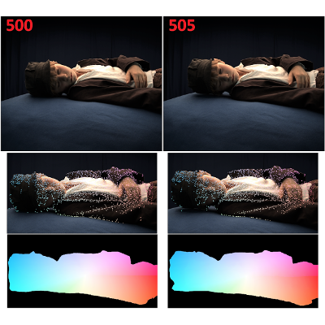 |
4D Temporally Coherent Dynamic Light-field Video A. Mustafa, M. Volino, J-Y. Guillemaut and A. Hilton International Conference on 3D Vision (3DV) 2017 |
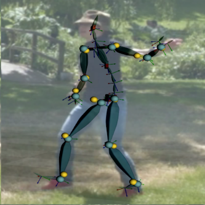 |
Real-time Full-Body Motion Capture from Video and IMUs C. Malleson, M. Volino, A. Gilbert, M. Trumble, J. Collomosse and A. Hilton International Conference on 3D Vision (3DV) 2017 |
 |
View-dependent representation of shape and appearance from multiple view video M. Volino PhD Thesis, University of Surrey, 2016 |
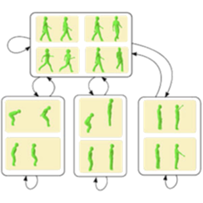 |
RE@CT: A new production pipeline for interactive 3D content F. Schweiger, G. Thomas, A. Sheikh, W. Paier, M. Kettern, P. Eisert, J.S. Franco, M. Volino, P. Huang, J. Collomosse, A. Hilton, V. Jantet, and P. Smyth IEEE International Conference on Multimedia & Expo Workshops (ICMEW) 2015 |
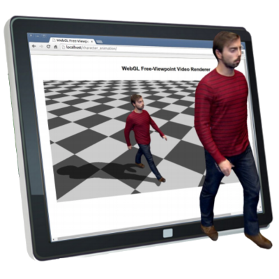 |
Online Interactive 4D Character Animation M. Volino, P. Huang, and A. Hilton International Conference on 3D Web Technology (Web3D) 2015 |
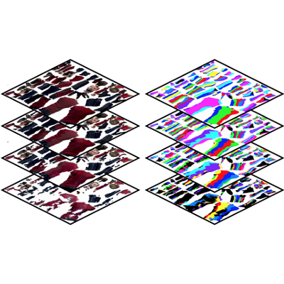 |
Optimal Representation of Multiple View Video M. Volino, D. Casas, J. Collomosse, and A. Hilton British Machine Vision Conference (BMVC) 2014 |
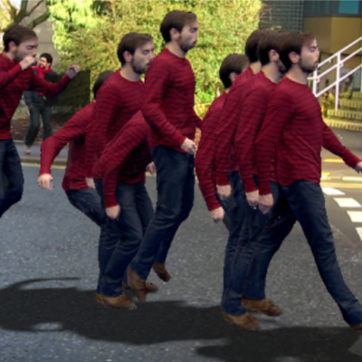 |
4D Video Textures for Interactive Character Appearance D. Casas, M. Volino, J. Collomosse, and A. Hilton Computer Graphics Forum (Proceedings of Eurographics) 2014 |
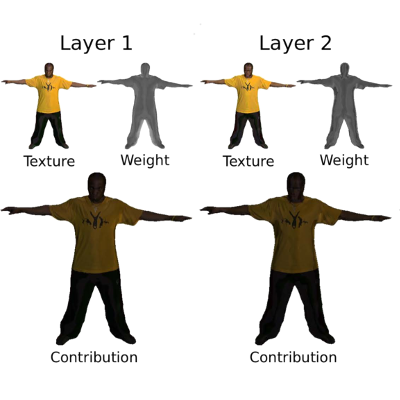 |
Layered View-Dependent Texture Maps M. Volino and A. Hilton Proceedings of the 10th European Conference on Visual Media Production (CVMP) 2013 |
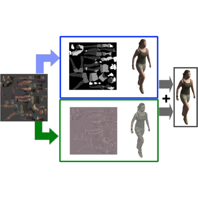 |
Free-viewpoint video rendering for mobile devices J. Imber, M. Volino, J-Y, Guillemaut, S. Fenney, and A. Hilton In Proceedings of the 6th International Conference on Computer Vision / Computer Graphics Collaboration Techniques and Applications (MIRAGE) 2013 |
Service
I have been involved in the organisation of the following conferences/meetings/workshops:
|
ACM SIGGRAPH European Conference on Visual Media Production 2020 London, UK Short Papers and Demos Chair |
|
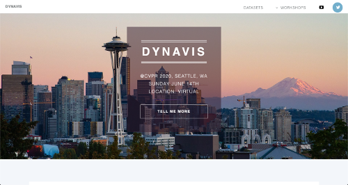 |
DynaVis: International Workshop on Dynamic Scene Reconstruction @ CVPR 2020 Seattle, WA (virtual) Co-Orgainser |
|
ACM SIGGRAPH European Conference on Visual Media Production 2019 London, UK Website Chair |
|
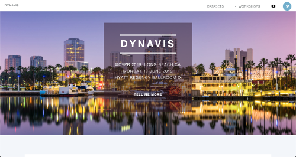 |
DynaVis: International Workshop on Dynamic Scene Reconstruction @ CVPR 2019 Long Beach, CA Co-Orgainser |
|
BMVA Technical Meeting: Dynamic Scene Reconstruction London, UK Co-Orgainser |
I have served as a reviewer for the following conferences/journals/workshops:
- ACM Transactions on Graphics (TOG)
- IEEE/CVF Conference on Computer Vision and Pattern Recognition (CVPR)
- IEEE/CVF International Conference on Computer Vision (ICCV)
- European Conference on Computer Vision (ECCV)
- International Conference on 3D Vision (3DV)
- ACM SIGGRAPH European Conference on Visual Media Production(CVMP)
- British Machine Vision Conference (BMVC)
- Virtual Reality & Intelligent Hardware (VRIH)
- Multimedia Systems (MMSJ)
- Computer Vision and Image Understanding (CVIU)
- IET Computer Vision
- 3D Reconstruction in the Wild (3DRW)
CV
Experience
|
Research Fellow University of Surrey, UK January 2016 - Present |
 |
Visiting Research Scholar University of Southern California, Institute for Creative Technologies, Los Angeles, USA June 2015 - September 2015 |
|
R&D Intern BBC R&D, London, UK January 2013 - April 2013 |
|
 |
Technical Support Officer Intelligent Systems Research Laboratory, University of Reading, Berkshire, UK July 2010 – September 2010 |
 |
R&D Placement Student Sony Broadcast and Professional Research Laboratories, Basingstoke, UK September 2008 – October 2009 |
Education
|
PhD Computer Vision and Graphics University of Surrey, UK October 2011 - January 2016 |
|
MEng Electronic Engineering - Distinction University of Surrey, UK September 2006 - June 2011 |
 |
BTec National Diploma Electrical/Electronic Engineering - Triple Distinction Richmond upon Thames College, London, UK September 2004 - June 2006 |
For a detailed CV please contact me.
Contact
Online
m.volino@surrey.ac.ukmarco.volino@gmail.com
linkedin.com/in/marcovolino/
facebook.com/marcovolino/